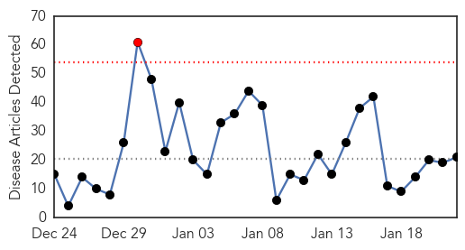
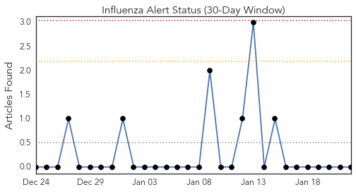
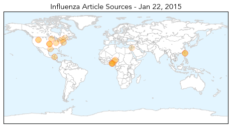
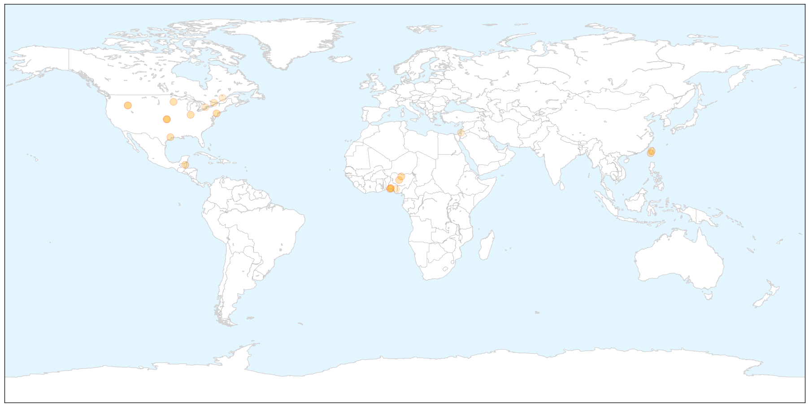
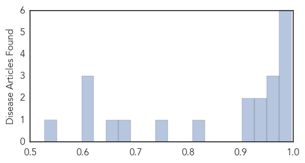

Influenza
30-Day Web Trend
1 alerts, 0 warnings

30-Day Twitter Trend
0 alerts, 0 warnings

Article Locations

X

Article Confidences
Top Articles:
- 0.997
- Somerset County Department of Health advise it's not too late to get a flu shot
- 0.995
- Centers for Disease Control (CDC) Caught Inflating Flu Deaths to Sell More Vaccines
- 0.994
- Coeur d'Alene Press: Sholeh Patrick
- 0.992
- Two poultry farms in Spanish Lookout placed under quarantine
- 0.987
- OUR OPINION: What, me worry about the flu? YES
- 0.976
- Avian flu outbreaks in Taiwan trigger human monitoring
- 0.970
- Taiwan bird flu: ‘No bird-to-human transmission of avian influenza has occurred’
- 0.967
- 140,810 infected as bird flu resurfaces
- 0.953
- Flu season continues to taper off
- 0.950
- Disease now in 7 Nigerian states, 140,390 birds infected
- 0.946
- Scientists Work To Build Better Flu Vaccine
- 0.916
- Five-year-old girl dies of flu four days after falling ill with 107 fever
- 0.914
- Nigeria and the Avian Influenza
- 0.810
- Avian Influenza Now In 7 States Including Lagos
- 0.748
- FG says bird flu now in seven states
- 0.688
- Today's stories from newspapers in Ottawa
- 0.652
- Today's stories from newspapers in North Bay Nipissing
- 0.602
- Avian Flu Spreads to New Nigerian States
- 0.601
- Today's stories from newspapers in Norfolk County
- 0.601
- Today's stories from newspapers in Norfolk County
- 0.527
- Poultry quarantine set in Canyon County
Top Tweets:
-
No tweets found for Jan 22, 2015
Chikungunya
30-Day Web Trend
3 alerts, 0 warnings

30-Day Twitter Trend
1 alerts, 0 warnings

Article Locations


Article Confidences

Top Articles:
- 0.998
- Lindsay Lohan Has The Disease, But What Is It?
- 0.997
- Chikungunya infections in Vermont
- 0.997
- Chikungunya updates from Honduras and Costa Rica
- 0.996
- What You Should Know About the Chikungunya Virus
- 0.981
- Pique Newsmagazine
- 0.961
- Lindsay Lohan Released from Hospital after Being Admitted with Chikungunya
- 0.947
- Mosquitos carrying Chikungunya hitchhiking to the U.S.
- 0.942
- Lindsay Lohan hospitalized for rare mosquito-borne virus
- 0.923
- State warning travelers of ailment
- 0.812
- Lindsay Lohan released from hospital
- 0.782
- Dina Lohan Worried, Begs Lindsay To Move Back To Long Island
Top Tweets:
-
No tweets found for Jan 22, 2015